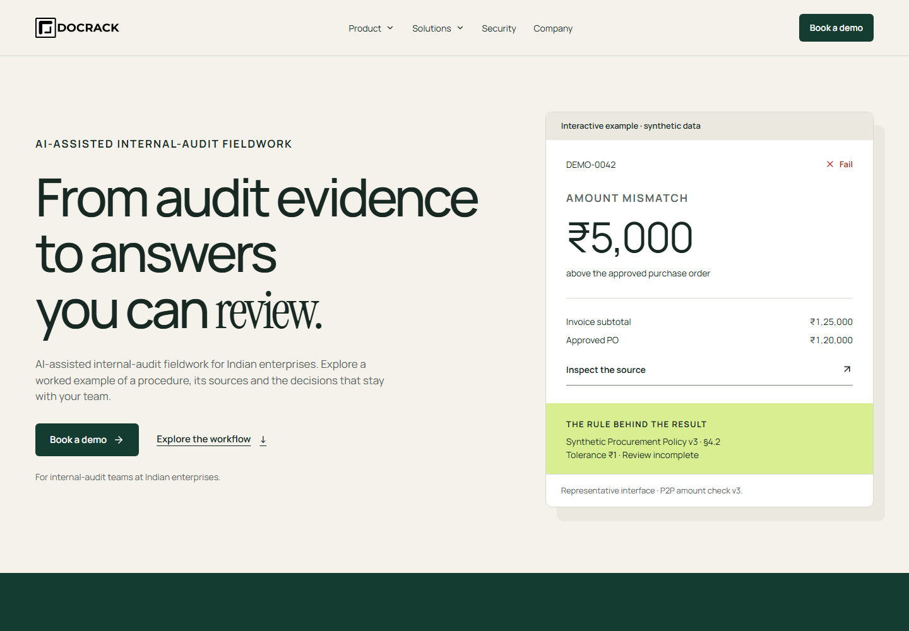

Local website renders of labelled synthetic illustrations. These are not authenticated-product captures or exports. Phase 3's genuine-evidence gate remains blocked. No founder approval is inferred.
Validation, performance budgets and remaining work
